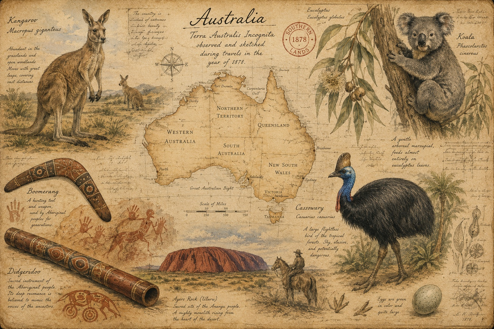

The chapter opens with a journey by Homo sapiens from East Africa through Eurasia and Southeast Asia. In the Sahul, a prehistoric supercontinent, Ancestral Australo-Melanesians carried the genetics of Neanderthals and Denisovans. As the seas rose, isolation created distinct cultures, languages, flora, and fauna in Australia, Tasmania, and Papua New Guinea. Dreamtime traditions, creator deities, and shamanic practices shaped spirituality. Continental landscapes feature kangaroos, cassowaries, dingos, koalas, reefs, and vast forests. Ancient technologies at Madjedbebe, Nourlangie Rock, and expeditions to the Pacific Islands exhibit sophistication. Unexplained environmental foresight and genetic connections to the Americas ended the chapter with an air of mystery.

Ancestral Australo-Melanesians diverged from East Africa, through Eurasia to Southeast Asia, with genetics from Homo neanderthalensis, Denisovans, and earlier Homo sapiens. Led by an unseen creator and marine animals, explorers crossed the islands of Wallace into Sahul. The ancient landmass once connected Australia, Tasmania, and Papua New Guinea. As sea levels rose, the land bridge disappeared. Distinct flora, fauna, cultures, and languages—Pama-Nyungan developed in isolation. Didgeridoo sounds in a mysterious land created an atmosphere of transcendence.
Walkabouts invited communion with the spirits of insects, birds, fish, reptiles, mammals, and creatures from inside the Earth. Barnumbirr, a creator deity from Venus, gifted the planet with a cosmic egg, a solar force. To honor the dead, shamans cleansed and prepared bones for burial. Mourners performed rituals with songs, dances, body paint, and smoke to guide the beloved from life into eternity.
In the Dreamtime, mountainous monoliths guarded the endless coasts. Kangaroos boxed, emus pecked, and wallabies leaped on the savannas. Above the snarls of dingos and Tasmanian devils, a koala clung to a gum tree in search of tender eucalyptus leaves. Deep in the melaleuca forest, cassowaries sprinted as hunters hurled spears, flung boomerangs, and evaded goannas.
Canoes drifted from estuaries through pink brackish lakes toward the Great Barrier Reef. In a wooden shelter, canopied by a cycad tree, weavers wove mats, hats, and baskets to collect plants. Moods shifted with Kakadu plum tonic and chewed bush tobacco. Elders shared memories of bunyips in the swamp, yowies in the outback, and the protective Rainbow Serpent in the waterways. Phases of Australians and Papuans sailed into a bioluminescent sea of stars.
In a rock shelter, archaeologists unearthed stone tools, fireplaces, and art in Madjedbebe, Australia, c. 63,000 BCE. Nourlangie Rock, Australia, depicted ethereal visions in ochre and clay, c. 18,000 BCE. Traditions, languages, oral histories, and genetics broadened into the Pacific Islands and the Americas.
Amazonians—Suruís, Karitianas, and Xavantes exhibited shared genetics with Indigenous Australians. Luzia, a fossil found in the Americas, presented with enigmatic morphology. Geologists, archaeologists, anthropologists, cultural heritage organizations, and astronomers found evidence of earthquakes, volcanic eruptions, tsunamis, solar eclipses, and meteor strikes painted on ancient Australian art.